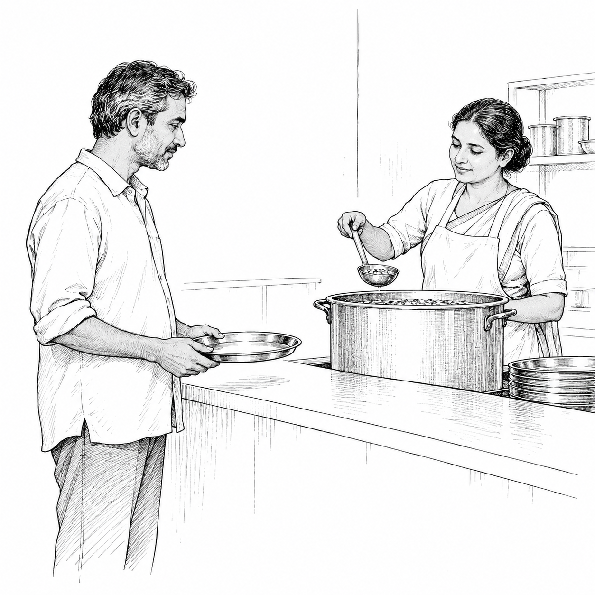

DHAGA 191 · proverbial saying
Whose choice is the meal?
ରଙ୍କ ଇଚ୍ଛାରେ କି ଭୋଜନ?
ଭୋକ ଲାଗିବା ଓ ନିଜ ଇଚ୍ଛାର ଖାଦ୍ୟ ବାଛିପାରିବା ଏକା କଥା ନୁହେଁ। ଅନ୍ୟର ଦାନ ଉପରେ ନିର୍ଭର କଲେ ଦାତା ଯାହା ଦେବେ, ସେତିକି ହିଁ ମିଳିପାରେ—ଅଭିଧାନର ବ୍ୟାଖ୍ୟା ଏହାକୁ କହେ। ପ୍ରଶ୍ନଟି ସେହି ଅସହାୟତାକୁ ବୁଝି କୁହାଯାଇପାରେ, ପୁଣି କାହାର ଇଚ୍ଛାକୁ ତୁଚ୍ଛ କରିବାକୁ ବି ବ୍ୟବହାର ହୋଇପାରେ। ଏଠାରେ ଆମେ ବାଛିବାର ସୁଯୋଗ କମିଯିବାକୁ ଲକ୍ଷ୍ୟ କରୁଛୁ, ଅଭାବରେ ଥିବା ଲୋକଙ୍କ କଥାକୁ ଅଗ୍ରାହ୍ୟ କରିବାକୁ ନୁହେଁ।
Literal meaning
Does the needy person’s wish decide the meal?
What it means
Wanting a meal and being able to choose it are different things. The source explains that someone dependent on another’s food receives what the giver wishes to provide. The question can expose how little say the recipient has. Its tone matters: it may describe that constraint sympathetically, or dismiss the person’s wishes. This reading draws attention to limited choice without endorsing that dismissal.
When you might use it
At a relief kitchen, a family asks whether a different meal is available, but only one prepared dish can be served. Afterwards a recipient says, “ରଙ୍କ ଇଚ୍ଛାରେ କି ଭୋଜନ?” to express having no choice, not to praise the arrangement. (Original imagined example.)
Cultural context
Historical need/dependence language; do not turn it into a demand for unquestioning gratitude.
